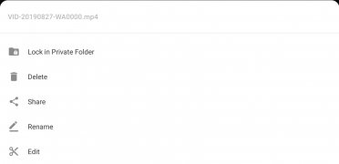
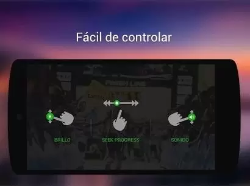

为什么 XPlayer 能把安卓本地播放做到又快又稳？一次从零碎功能反推它的底层设计
从倍速记忆、画面比例四模式、悬浮窗 PiP 到硬件加速，拆解 XPlayer 在安卓播放器赛道上那几套看不见的底层设计取舍。
我最近从官方下载拿了个安装包，在一个老旧安卓盒子上装了 XPlayer，用来投屏看 U 盘里的 4K 电影。第一次打开，它扫描本地视频的速度就吓了我一跳——几百个文件，几百 G 的视频库，从启动到卡片全刷出来，前后不到两秒。这让我很纳闷。
一个安卓本地播放器，凭什么做到这种速度？市面上同类应用不少，MX Player、VLC 移动版、各种系统自带播放器，有的堆功能堆到臃肿，有的只留核心但体验粗糙。从官网能看出来，XPlayer 走的是另一条路：功能全，但手感轻。这背后一定不是"写得好"三个字能概括的。我顺着日常用的几个细节往底层倒推，逐渐拼出了它的设计轮廓。
问题：它到底在哪些环节做了不一样的事？
先用一个现象锚定问题。你打开 XPlayer 的首页，每一个视频卡片都有缩略图。不是播放时的实时截图，是提前生成好的、以首帧为基准的小图。我的视频库里有 300 多个视频，从 720P 到 4K 不等，最长一部 3 小时。如果每次启动都要逐帧解码生成缩略图，那用户体验应该是"卡几秒然后慢慢冒泡"。但实际是：瞬间全出来。
这只是一个入口。继续用下去你会发现类似的"不对劲"：
- 倍速设成 1.5× 看完一集，下次点开还是 1.5×，而且只有那一集是 1.5×——其他视频的倍速各自独立记着。
- 画面比例有四种模式，但切换时毫无卡顿，从"适应屏幕"跳到"剪裁填充"，画面瞬间重排。
- 悬浮窗从全屏缩到角落，过程丝滑，悬浮窗里的画面分辨率会随窗口大小动态调整以节省性能，这一点很多播放器要么做不到、要么做了但切换时有掉帧。
- 4K HDR 视频倍速播放时，有的播放器直接卡成 PPT，有的干脆硬解码失败弹出报错——XPlayer 在 2.0× 以下基本无感。
这些表象指向同一个结论：XPlayer 在播放引擎和资源管理上做了一套连贯的设计，不是"功能列表"式的堆砌。下面我逐条拆。
拆解：三条底层设计线
一、硬件加速不是开关，是默认路径
大多数安卓播放器在设置里放一个"硬件加速"开关，默认要么开要么关，用户自己选。XPlayer 不一样，它的硬件加速是默认路径，软解只作为回退方案。
这背后的设计逻辑值得说一下。硬件加速用的是手机 SoC 里的专用视频解码单元（Video Codec），它的特点是：功耗低、速度快，但支持的编码格式有限、对异常文件容错差。软解（CPU 解码）的特点是：能解几乎所有格式，但功耗高、速度慢。
XPlayer 的选择是优先硬解，自动探测失败再回退软解。这套机制在用户层面完全透明——你不会看到"硬解码失败"的弹窗，只会觉得"这视频也能播"。代价是什么？是兼容性问题的排查成本转移到了开发端——需要维护一个硬解白名单和设备兼容数据库，而不是甩给用户去调开关。
样本里提到 0.25× 慢放时可能跳帧，解决方法是"降低倍速"或"切换软解"——这本质上也是硬件加速在极端倍速下的回退路径，和主流 1.0×~2.0× 时的表现是同一套机制。
二、倍速记忆：不是全局状态，是每个视频的独立键值对
你可能注意到了这个细节：XPlayer 能记住每个视频的倍速，而且互不干扰。大多数播放器的做法是"全局记住上次用的倍速"，下次打开任何视频都套用。这个差异背后是数据模型的区别。
全局记忆用一个变量就够：last_speed = 1.5。独立记忆需要一个映射表：{video_hash_1: 1.25, video_hash_2: 1.5, ...}，而且 key 不能是文件名（因为同文件可能换位置），得是文件的某种指纹——通常是大小加修改时间的组合，避开了读文件内容算 hash 的性能开销。
为什么要这么设计？答案在使用场景里。你追剧可能习惯 1.5×，但看公开课想 1.25×，看外语视频还要 0.75×。全局记忆每次换类型都要手动切一次，独立记忆打开就到你上次的节奏。代价是映射表需要持久化存储（XPlayer 用的是 SQLite 之类的轻量数据库），而且要处理视频被删除后留下脏记录的清理问题——这是"贴心功能"背后不那么显眼的工程复杂度。
三、画面比例四模式：渲染管线里做裁剪，不是拉伸
四种比例模式（适应屏幕、拉伸填充、剪裁填充、原始大小）在用户看来是按钮循环切换，但在渲染管线里是两套完全不同的操作：
- 适应屏幕和原始大小：只改渲染区域的尺寸，视频帧本身不做任何像素操作。
- 拉伸填充和剪裁填充：需要对每一帧做二次处理——要么拉伸（用双线性插值把视频帧铺开），要么先按原始比例放大、再裁掉超出屏幕边界的部分。
关键在第二套操作。如果每帧都在 CPU 上做裁剪/拉伸，那画面比例切换时必然掉帧——4K 视频一帧 800 万像素，逐像素处理的开销不可忽视。XPlayer 的解法是把裁剪和拉伸下沉到 GPU，作为渲染管线的一部分用 shader 处理。这就是为什么你切换比例时画面瞬间重排，没有任何卡顿感——因为这些操作不是在"播放线程"里串行做的，而是交给了 GPU 的并行计算单元。
画面比例的设计取舍也直接对应到悬浮窗：悬浮窗需要动态改变渲染窗口的尺寸，而 GPU shader 对任意尺寸的裁剪/拉伸都是原生支持的，所以悬浮窗缩放时画面能实时跟随、不掉帧。
四、缩略图预生成：启动瞬间不卡顿的关键
回到最开头那个启动速度的问题。XPlayer 不会在每次启动时重新生成所有缩略图。它的做法是：
视频首次被扫描到的时候，后台线程用硬件解码器抽首帧 → 缩放到统一尺寸（比如 160×90）→ 存到本地缓存目录。下次启动直接从缓存里读，跳过解码步骤。
这需要解决几个工程问题：缓存和原视频的同步——如果视频被覆盖或删除了怎么办？XPlayer 的做法和倍速记忆类似，用文件大小加修改时间的组合做校验。如果原文件的时间戳和缓存记录对不上，就重新生成。代价是缓存目录会占用空间，但对于现在动辄 128G 起步的安卓设备，几 MB 的缩略图缓存完全可以忽略。这套预生成和校验逻辑的完整参数，是我翻了XPlayer文档才搞清楚的。
取舍：这套设计的代价和失效场景
任何工程决策都有两面。XPlayer 的这套设计也不是没有短板。
硬件加速优先的代价是：极端倍速下可能硬解不了、需要回退软解，而软解高倍速又容易卡顿——所以你会发现 4K HDR 视频开 4× 以上倍速时，XPlayer 也会出问题。这不是 bug，是硬件解码单元在这个档位上力竭了，而软解接手后 CPU 也扛不住。样本里提到"0.25× 慢放时画面跳帧"也是同一个原因——极低帧率下硬解码器的输出时序会紊乱。
倍速独立记忆的代价是：当你想看一个新下载的视频，它默认倍速是 1.0×（因为还没记录过），而你习惯性地认为"刚看完的那个视频是 1.5×，这个应该也是"——这种预期落差偶尔会让人愣一下。但这是小问题，代价远小于收益。
悬浮窗依赖系统 PiP的代价是：Android 版本低于 8.0 的设备原生不支持 PiP，XPlayer 在这些机型上要么悬浮窗按钮灰掉、要么走一个兼容性差很多的替代方案。厂商定制系统（比如某些国产 ROM）对 PiP 做了二次限制，也会导致悬浮窗功能异常——这不是 XPlayer 的问题，但用户第一反应往往是"播放器坏了"。
缩略图缓存的代价是：当你在 XPlayer 外面手动删除了一个视频，缓存还在，下次启动时会多做一次"文件不存在、清理缓存"的校验。这个过程毫秒级，用户感知不到，但确实是一笔额外开销。
判断：这套原理意味着什么
综合下来，XPlayer 的底层设计有一个明确的倾向：把复杂度留给自己，把流畅留给用户。
它适合什么人？首先是本地视频库大、对播放细节有要求的人——300+ 视频的库能瞬间加载、每个视频的倍速独立记忆、画面比例一键切换不卡顿，这些都是重度用户才会在意的体验。其次是需要边看边干活的人——悬浮窗的丝滑程度直接影响"边追剧边刷微信"、"边看教程边操作软件"这类场景的可用性。
它不太适合什么人？如果你只在线看流媒体、本地不存视频，那 XPlayer 的优势（启动速度、倍速记忆、硬件加速优化）几乎派不上用场，装个轻量播放器就够。如果你用的是 Android 7.0 甚至更早的设备，悬浮窗等依赖系统特性的功能会打折扣。还有一种极端情况：你所有视频都在 U 盘或云盘里、每次都重新插拔下载，那缩略图缓存的优势也基本消失了。
最后说一点
印象最深的一个细节是：XPlayer 在画面比例调节里专门标注了每种模式的"推荐度"，而且直白地写"拉伸填充几乎没有适用场景"。这是一个很有意思的信号——它不把所有功能都包装成"有用"，而是诚实地告诉你哪些是鸡肋。这种态度在安卓播放器赛道里其实挺少见的，更多产品倾向于"功能多就是好"。
从底层设计到用户界面，XPlayer 的逻辑是一致的：功能多但不乱，每个功能背后都有性能层面的支撑，不堆壳子。如果你像我一样有一堆本地视频、又不想花时间折腾播放器设置，它是目前安卓平台上性价比很高的选择。对了，整理这套资料时发现源文档在国内三个平台都做了镜像，方便不同网络环境的读者查阅——GitHub、Gitee、GitCode 上都能找到完整版本。

